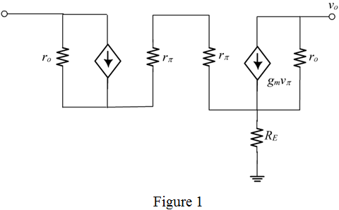

The voltage drop across  is,
is,
Substitute 25 mV for  ,
,  for , and 1 mA for .
for , and 1 mA for .
(a)
Refer to Figure 7.36 in the textbook for the Widlar current source circuit.
The equivalent circuit of the Widlar current source configuration is shown in Figure 1.

The voltage drop across is,
Substitute 25 mV for , for , and 1 mA for .
The voltage drop across is,
Substitute 25 mV for  ,
,  for , and 1 mA for .
for , and 1 mA for .
Write the expression for the output current.
Substitute for and for , and  for to calculate the emitter resistance.
for to calculate the emitter resistance.
Therefore, the required emitter resistance is, .
(b)
Write the expression for .
Substitute 25 mV for  ,
,  for
for  , and 200 for
, and 200 for  .
.
Calculate the value of  .
.
Therefore, the value of the output resistance is, .
Calculate the change in current.
Therefore, the change in current is, .